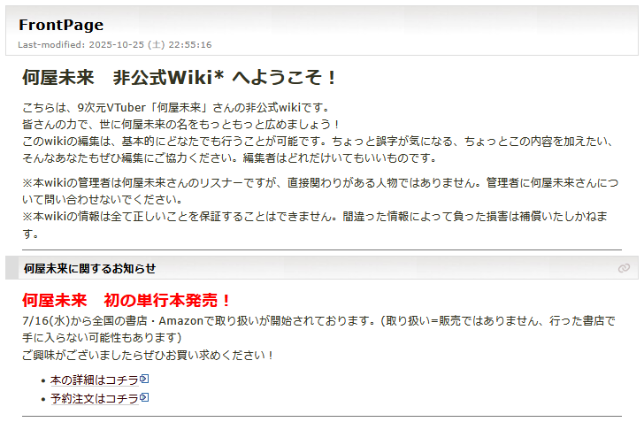
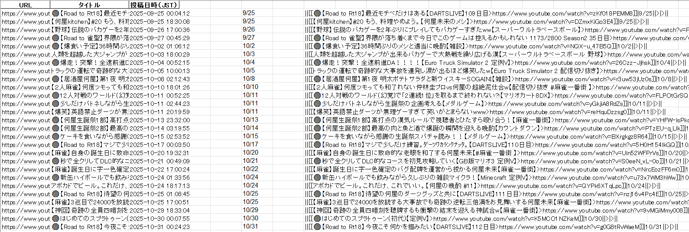
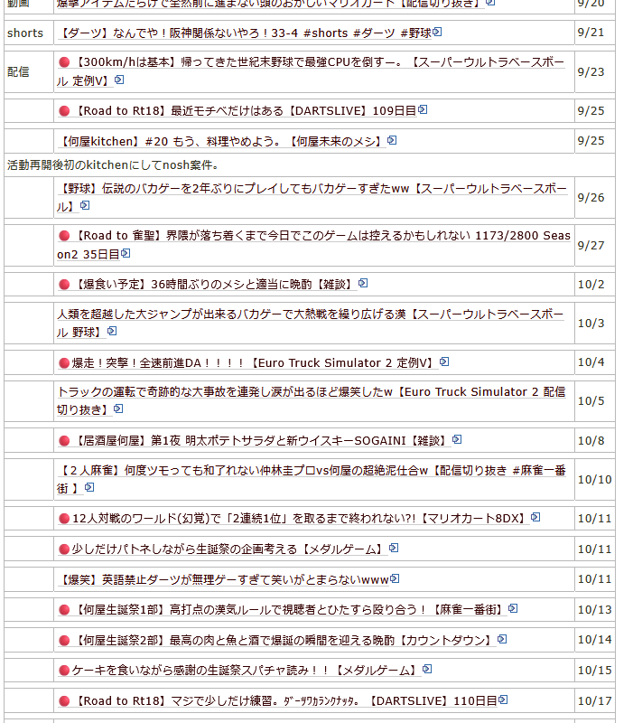

何屋未来 非公式wiki

基本情報
- 制作時期
- 大学1年11月～現在
- 役割
- 立ち上げ、管理、編集
- 使用ツール
- WikiWiki、付属マークアップ言語
- リンク
- Wikiページ
制作のきっかけ
これまでwikiはゲームに付随するものだという考え方をもってきましたが、大手VTuber事務所の非公式wikiが良質なファンコミュニティとして機能していることを知って、ゲーム以外のwikiの有用性に気付きました。
そこで、私自身が推している個人配信者「何屋未来」氏の非公式情報wikiを設立し、複数のリスナーと共に日々編集に励んでいます。
こだわった点・工夫した点
- 物量には技術で対抗
- 生成AIの力を借りたAPI呼び出し
Wikiの目玉コンテンツとして、「すべての動画・配信・Shortsのまとめページ」は必要だろうと考えました。
しかし、その時点で何屋未来氏の活動は2年以上にわたっており、動画数は手作業でまとめるにはあまりにも多すぎました。そこで私は、APIを活用した自動化に着目しました。
自動化を思いついたはいいものの、APIに関しての知識には乏しく、自力での実装には多大な労力を要すことが予想されました。
そこで、ChatGPTを活用し、要件定義とコーディングのサポートを受けながら、YouTube Data APIを呼び出すPythonスクリプトを記述しました。
チャンネルの全動画データを自動取得してExcelに出力し、さらにExcel上で「UTCからJSTへの時刻変換」や「文字列結合を用いたWikiの表組み構文への変換」を行う関数を組みました。
これにより、「ExcelのデータをコピペするだけでWikiのページが完成する」という状態を作り出し、手作業では終わりの見えない物量を数分で処理することに成功しました。
▼ 実際のスクリプトとWikiの画面


今後の課題・展望
現在、動画の種別（通常動画 / 配信 / Shorts）については手動で入力していますが、何屋未来氏が配信には🔴マークを、Shortsには#Shortsという文字列を入れていることを活かして、タイトルの文字列を検出し、Excel上で種別まで自動入力させる改善を検討しています。
振り返り・学び
好きなことに関する作業でも、物量には限界があることを知りました。
プログラマーに関してよく言われる「楽するために苦労する」を経験できたことは良いことだと考えています。